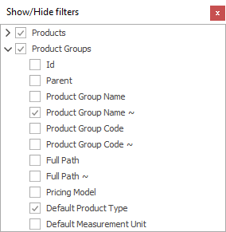

Customizing Filters
By Customizing Filters, you can set what filtering criteria will display in the Search panel. To access that setting, right-click on the Search panel and select Show/hide filters.

Here you can set which filters you need to be visible. Visible fields will have a checkmark next to their name:

The Filters with sub-filters in them will display with this arrow when hidden:  and it will change when you expand them:
and it will change when you expand them:  .
If one of the main filters isn’t visible, its sub-filters won’t be visible as well, no matter if you checked them or not.
.
If one of the main filters isn’t visible, its sub-filters won’t be visible as well, no matter if you checked them or not.
You can also customize your filters by locking in a certain value in them.